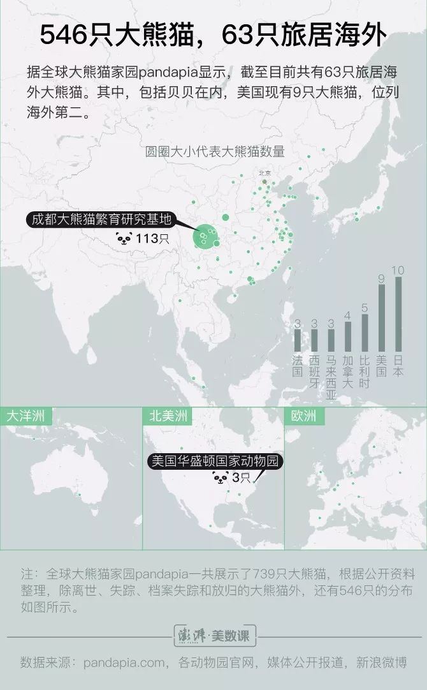
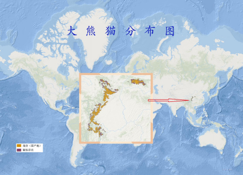

首页》分布
世界分布
63只国宝旅居海外，在日本和美国的最多
2018年底，国家林业和草原局称，全国共有58只大熊猫在外参与国际合作研究项目。最新数据显示，共有63只旅居海外。这5只大熊猫变动的原因，分别是毛笋、星二飞往丹麦（2019年4月4日）；园园去了奥地利（4月15日）；丁丁、如意搬到俄罗斯（4月29日）；白云、小礼物母子回国（5月16日）；旅居比利时的好好诞下了龙凤胎（8月8日）。
据统计，我国已与20个国家开展大熊猫研究合作，日本和美国是海外拥有大熊猫最多的国家。除图上标注数量的7个国家外，还包括丹麦、俄罗斯等13个国家各拥有大熊猫2只。
中国分布
大熊猫是中国的特有物种，分布地区包括秦岭、岷山、邛崃山、大相岭、小相岭和大小凉山等山系。秦岭山系分布于南麓，主要分布的县是佛坪，一般分布的县是洋县，仅有少量分布的县有太白、宁陕周至、留坝、宁强等。岷山系除甘肃文县为一般分布外，其余都分布于四川。在四川主要分布的县有平武青川和北川等三县，一般分布的有九寨沟县、松潘、茂县等县，少量分布的县有安县、绵竹、彭州、什邡和都江堰市。邛崃山系主要分布的县有宝兴、汶川和天全等，一般分布的县有大邑和芦山，仅少量分布的县有邛崃、崇州、康定、泸定等。大小相岭除洪雅和冕宁为一般分布县外，仅有少量分布的县有荥经、石棉、汉源、九龙等。大小凉山除马边、美姑和越西有一定数量外，仅有少量分布的县有甘洛、峨边和雷波等。